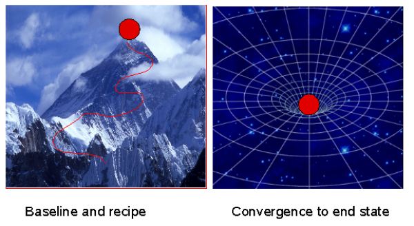

Change Management
What is change management?
Change Management is about the planning and implementation of intended changes to an IT system, as well as the detection, documentation and possible repair of unintended changes. Change Management involves the assessment of current system state, the planning, testing and quality assurance cycles, and scheduling of improvements.
There are many accounts of change management in the industry. Often these make assumptions about the management framework being used. In the context of CFEngine automation, some of these approaches are considered antiquated. This guide explains change management in the framework of CFEngine's self-healing automation.
Regulation: authorized and unauthorized change
It is common to speak of authorized and unauthorized change in the IT industry. Many organizations think in these authoritarian terms and use management techniques designed for a slower-moving world. Today's e-commerce companies usually have much more agile and dynamical processes for change.
The purpose of change regulation is to minimize the risk of actions taken by humans, i.e. to avoid human error. This approach makes sense in low-tech companies that have environments where change is only about long-term wear and tear or intended modifications to infrastructure (like a adding new building, or fitting a new gasket on a car). In today's IT-driven organizations, problems arise a thousand or more times faster than that, and a new approach is needed.
Procedures for change, based on legacy regulative methods are incorporated into popular frameworks for human management, such as ITIL. They begin by making a formal Request For Change (RFC), which is processed by management in order to secure permission to exercise a change during an allocated time-window. In some cases, an ordinary repair such as restarting a server could take weeks to process, as mandatory Root Cause Analysis (RCA) is undertaken. The Mean Time To Repair (MTTR) is dominated by internal bureaucracy.
Today's IT-based organizations, experience unintended change too quickly for such a process however, and there is a real risk of lost revenues from not repairing issues quickly. As many organizations are fearful of litigation or management reprisals, preferring to err on the side of caution, it is necessary to evaluate the best strategy for avoiding exposure to risk. To use automation effectively, it makes sense to separate change management into two phases:
Change of policy itself - which defines desired state.
Policy has a strategic impact, and its change deserves a process that includes expert opinions, staged testing and ultimately a phased deployment during a controllable time-window. Change that brings systems into compliance with policy.
Once policy is frozen for a period of time, any unintended changes must be considered infractions (non-compliance), and repairs should be made according to what has already been decided. This should happen without delay, rather than starting a new process to delay action. The ethical issue is now turned on its head: execessive caution in fixing what has already been decided may be seen as prevarication and even negligence.
The CFEngine way of managing change is to migrate systems through states of stable equilibrium. One should not believe that systems continue flawlessly because no intended changes are made. Change management with CFEngine should be about planning one stable state after another, but expecting run-time errors. The rate at which you move through revisions of stable policy depends on your needs. The rate at which compliance is repaired should be `as soon as possible'.
To use an analogy: if policy changes are like take-off and landing, then a period of stable operations is like a smooth flight, on course to the correct destination. If unintended changes happen to change that, like the weather, immediate course corrections should be made to avoid loss.
Intended and unintended change
To institue a rational approach to change management, i.e. one that is suited to business's operational time-scales, we need to think about separating change into two the categories implied above: change by design and change by fate. It is desirable to exercise due diligence in the design of a system's intended state, but we must be ready to quickly repair faults that might disrupt business services. We need to distinguish:
Purposeful change of an intended policy (planning).
Change in the actual system state and behaviour (implementation and maintenance).
What is intended and what actually happens should not be confused. It is impossible to `lock down' or fully control changes made to computer systems, without switching them off. A mandatory level of risk must be anticipated.
It is by defining a desired operational state that one can avoid re-processing every since repair to a system.
How fast should changes be made?
Time scales are crucially important in engineering, and deserve equal importance in IT management. Ask yourself: how do you know if something is changing or not? You've probably heard catchetisms such as:
- A watched kettle never boils.
- Tempus fugit (time flies).
These phrases capture the idea that, if we expect to see change at a certain rate, it is possible to miss changes that occur at either a faster or slower rate. When we manage a dynamical process, we have to attend to the system at the same rate as change takes place.
If there is a process changing the system once a day, then to keep the system aligned with its desired state, there must be a corrective process that repairs this once per day (the Mean Time To Repair or MTTR should be the same as the Mean Time Before Failure MTBF), else the system will experience significant deviations from policy. In the worst case, this could result in security leaks or loss of revenue. This is not the full story of course: there will always be some delay between error and repair (actual time to repair). To minimize the impact of lost compliance and deviations from intended state, changes should be made before serious consequences can ensue that require more significant repairs[1].
Thus, mean time to repair is not a metric that should be used to define ideal time to repair. The ideal time should be that which minimizes the risk of losses to operations, and therefore revenues.
The advantage of CFEngine's two-phase approach to change is that approved changes can be made a quickly as possible, without significant use of resources. CFEngine's lightweight agents can run every five minutes to achieve a tight alignment with operational and business goals.
In information theory, Nyquist's theorem says that, in order to properly track (and potentially correct) a process that happens at rate R, one must sample the system at twice this rate 2R. In CFEngine, we have chosen a repair resolution of 5 minutes for configuration sampling, because measurements show that many system characteristics have auto-correlations times of 10-20 minutes[2].
Partially centralized change
It is not necessary to assume a central model of authority to manage change. Indeed, many CFEngine users have highly devolved organizations with many decision makers. Federated regions of an organization can maintain independent policies, aligned with different cultures if necessary.
What may be problematic is to have teams that are not aligned, so that there are conficting intentions. In this case, one individual might instigate a change that conflicts with another. This often happens in `hit'n'run system administration', where there is no concerted plan or modus operandi.
To keep federated teams aligned with common criteria for policy, strong communication is required. For this we provide access to information through the Mission Portal. This shows the policy itself in different regions, as well as reports about the compliance of systems. Users can also exchange messages about their intentions, through policy comments and personal logs in the system.
The decision point
By making all changes through a single point of control and verification, you avoid[3] the problem of multiple intentions, because all intentions will be clear to see. CFEngine works with promises, because a promise is simply the expression of an intention.

If you work in a federated environment, then each distinct region of policy can have its own policy server or hub. These will not conflict, unless a host subscribes to updates from more than one hub.
Promises about change vs state
CFEngine works by keeping promises, so think about how promises apply to change.
You could promise to make a change, but that is a very weak promise because it would be kept by a single transitory event (the moment at which the change is made) and then it would go away. To have control over your system at all times you need to make promises about state, because state is something that persists for long times, and thus the promise persists.
When we care about the state of a system, we make promises that describe that state at all times, because we know that there might be other forces for change that can bring about unintended states. If we intend the state of the system to persist, we should promise that. Thinking always about periods of stable equilbrium will minimize issues with non-compliance.
To make a change of state, you should think about changing the promises that describe your desired state, not about promising to make a change of state.
An analogy: think of change management as navigation though a sea of possible states. If you promise changes, you promise to alter course relative to your current state, e.g. turn left, turn right, alter heading by 10 degrees to starboard, etc. However, you are now vulnerable to things you don't know about. Winds and currents blow you off course and can lead to unintended changes that invalidate these course corrections, if you have not promised to monitor and avoid them. That is why modern navigators use beacons.
In CFEngine, a beacon is a promise of desired end-state (the end of your journey). It's the place you want to be – and the journey doesn't interest you. Navigators used fixed stars, lighthouses and now artificial radio signals to guide ships and planes on their intended course at all times, because beacons promise absolute desired location, not relative instructions to get there. CFEngine uses promises in the same way, to guide systems to their desired outcomes, not merely a script of relative corrections. So CFEngine works somewhat like a system auto-pilot.
Promises about change
To help you think of change in terms of promises, consider the following promises made during change management, with CFEngine examples.
You promise a desired state for your system (beacon).
bundle agent example
{
packages:
"apache"
comment => "Ensure Apache webserver installed",
package_policy => "add",
package_method => yum;
processes:
"apache"
comment => "Ensure apache webserver running",
restart_class => restart_apache;
}
You change a promise you have made about state to promise a new desired state.
You edit promises.cf and track the changes using a change management repository like Subversion or CVS. A third party promises a change and we promise to accept that change.
bundle agent example
{
packages:
"apache"
comment => "Ensure Apache webserver up to date",
package_policy => "update",
package_method => yum;
}
We promise to monitor unintended changes.
bundle agent example
{
files:
"/usr" -> "Security team"
changes => detect_all_change,
depth_search => recurse("inf");
}
We promise two conflicting outcomes (a validation error to be corrected). Conflicts of intention are easy to see when they are mediated by CFEngine.
bundle agent example
{
files:
"/etc/passwd" -> "Security team"
perms => owner("root");
"/etc/passwd" -> "Security team"
perms => owner("mark");
}
Perhaps you can think of more promises for your own organization. CFEngine encourages promise thinking because it promotes stable expectations about the system. Let us underline what traditional approaches ignore about change management:
If you have made no promise about your system state, you should not be surprised by anything that happens there. You cannot assume that no change will happen.
Change management and knowledge management
The decision to manage change is an economic trade-off. The more promises we make about state, the higher the cost of keeping them. You have to decide how much you are willing to spend on navigating change.
CFEngine makes desired state cheap, but the true cost of change management is not implementation but the cost of changing knowledge, i.e. losing track of your place within your intentions. If your system behaviour is dominated by changing external currents that you ignore, you will constantly be fighting to steer reactively.
Knowledge Management is necessary to maintain a guidance system that makes course programming reliable and effective. CFEngine allows you to document all of your intentions as promises to be kept. CFEngine Nova additionally provides a continuously updated knowledge map as part of its `auto-pilot navigation' facilities, based on what we promise and what it discovers about the environment impacting on systems. Hence, it tracks both promised state, and unintended changes.
Lack of knowledge about your system is the cause of unexpected side-effects and unpleasant surprises. The key to predictability in system operations is CFEngine's core principle of convergence. CFEngine Missions Specialists always think convergence.
Non-destructive change
The IT industry, for the most part, has not really progressed beyond the idea of baselining systems. In the traditional conception of change management you start by baselining, i.e. establishing a known starting configuration. Then you generally assume that you are the only source of change. If something goes wrong you do not try to repair the fault, but merely start again, destroying and rebuilding.
In fact, all kinds of things change beyond our control all the time. Bugs emerge, items are stolen, things get broken by accident and external circumstances conspire to confound the order we would like to preserve. The suggestion that only authorized people actually make changes is simply wrong.
In reality, circumstances are part of the picture, as well as changing inventory and releases. CFEngine uses the idea of “convergence” (see figure below) to ensure desired state, independently of where you start from. In this way of thinking, the configuration details might be changing in a quite unpredictable way, and it is our job to continuously monitor and repair this general dilapidation. Rather than assuming a constant state in between changes, CFEngine assumes a constant “ideal state” or goal to be achieved at all times.
Change and convergence
Change requires action, and implementation is the most dangerous part of change, as it leads to consquences that a difficult to predict, especially if you have incomplete knowledge of your environment.
Reliability and dependability on promises requires you to think about the convergence of all change operations. Many change procedures fail because they are built in a highly fragile manner (left hand figure): you require exact knowledge of where you start from, and you have a recipe that (if applied once and only once) will take you to the desired end state.

Such a procedure cannot maintain the desired state, without demolishing it and rebuilding it from scratch. With CFEngine you focus on the end state (right hand figure), not where you start from. Every change, action or recipe may be repeated a infinite number of times[4] without adverse consquences, because every action will only bring you to the desired state, no matter where you start from.
The change decision process or release management
The process of managing intended changes is often called release management. A release is a collection of authorized changes to the promises of desired state for a system.
A release is traditionally a larger umbrella under which many smaller changes are made. Changes are assembled into releases and then they are `rolled out'.
At CFEngine we encourage many small, incremental changes above large risky changes, as every change has unexpected consequences, and small changes minimize risk. (See the Special Topics Guide on BDMA.)
Release management is about the designing, testing and scheduling the release, i.e. everything to do with the release process except the explicit implementation of it.
New releases are usually made in response to the occurrence of unintended changes, called incidents (incident management). An incident is an event that leads to unintended behaviour. The root cause of many incidents is often called a problem (problem management). One goal of CFEngine is to plan pro-actively to handle incidents automatically, thus taking them off the list of things to worry about. Changes can introduce new incidents, so it is important to test changes to promises in advance.
Formulate proposed intentions in the form of promises.
Discuss the impact of these in your team of CFEngine Mission Specialists (more than one pair of eyes).
Construct a test environment and examine the effect of these promises in practice.
Commit the changes to promises in version control, e.g. subversion.
Deploy promises changes into live environment on a small number of machines.
Finally deploy to all machines.
At each stage, we make careful, low-risk incursions on the system and see how it responds. Note that some side-effects could take days to emerge, so the schedule for change should account for the expected impact.
Deploying policy changes
The following sequence forms a checklist for deploying successful policy change:
Discuss the impact of changes in the team.
Construct a test environment and examine the effect of these promises in practice.
Make a change in the CFEngine input files.
Run the configuration through `cf-promises --inform1 to check for problems.
Commit the tested changes to promises in version control, e.g. subversion.
Move the policy to a test system.
Try running the configuration in dry-run model:
cf-agent --dry-runTry running the policy once on a single system, being observant of unexpected behaviour.
Try running the policy on a small number of systems.
Move the policy to the production environment.
If possible, test on one or a few machines before releasing for general use.
Be aware of the differences in your environment. A decision will not necessarily work everywhere in the same way.
Footnotes
[1]: For example, suppose a process runs out of control and starts filling up logs with error messages – the disk might fill up and cause a much more serious problem, such as a total system failure with crash, if this were left unattended.
[2]: Nyquist's theorem is the main reason why CD-players sample at 44kHz in order to cover the audible spectrum of 22kHz for most young people. Even though hearing deteriorates with age, and most people cannot hear this well, it provides a quality margin.
[3]: Promise theory tells us that coordination requires mutual agreement between all agents that work in a coordinated way on common resources. Every decision necessarily comes from a single point of origin (but there could be many of these, making non-overlapping decisions); consistency only starts to go wrong when intentions about common resources conflict.
[4]: Some writers like to call this property idempotence.